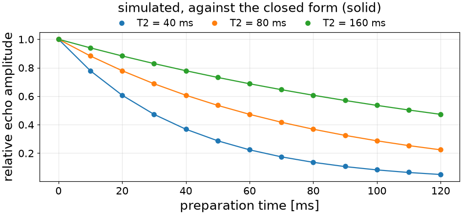
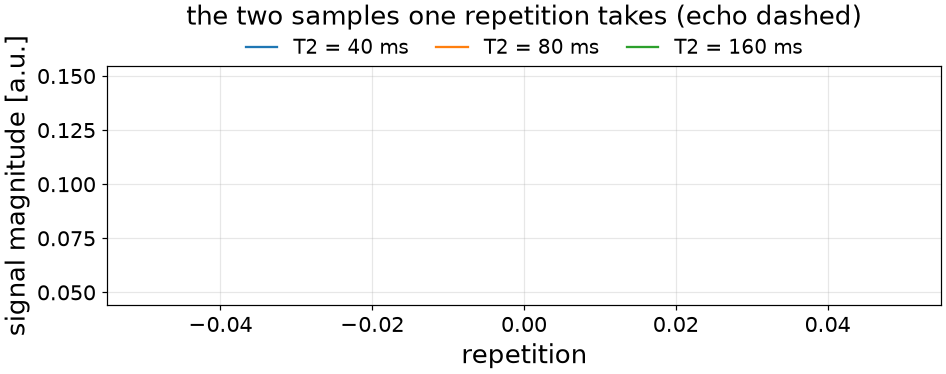
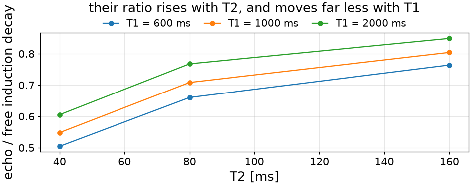

Note
Go to the end to download the full example code or to run this example in your browser via Binder.
Writing a New Operator#
The scope of this notebook is to show how to add a sequence module TorchSim does not ship – a preparation, or a readout – without touching a kernel.
An operator is a Python function that returns events and says how long it
holds the timeline, and @ composes two into one. Two are written here: a
T2 preparation, and a readout that takes both samples an unbalanced repetition
can carry.
The operators the new ones are composed from, and the simulator that plays them.
import torch
from torchsim import (
Delay,
Dephase,
Excitation,
Readout,
Refocusing,
SSFPEchoReadout,
SSFPFidReadout,
Spoil,
)
from torchsim.model import Simulator
Composing existing operators#
A T2 preparation tips the magnetization into the transverse plane, lets it decay for a chosen time about a Refocusing pulse, tips what is left back along z, and spoils whatever did not come back.
All of those are operators already, so @ is the whole of writing it.
Nothing new is taught to the kernels – what is new is the arrangement, and
that is what an operator is.
The Refocusing pulse is asked for uncrushed: a T2 preparation refocuses
rather than dephases, and the crusher pair Refocusing() adds
by default would spoil the echo it exists to form.
def t2_preparation(echo_time_s, *, spoil_s=2e-3):
"""Return a T2 preparation that weights the magnetization by its own decay.
Parameters
----------
echo_time_s:
How long the magnetization spends in the transverse plane.
spoil_s:
The spoiler after the tip-up, which removes what did not return.
"""
half = 0.5 * echo_time_s
return (
Excitation(0.5 * torch.pi)
@ Delay(half)
@ Refocusing(torch.pi, 0.5 * torch.pi, crushed=False)
@ Delay(half)
@ Excitation(-0.5 * torch.pi)
@ Delay(spoil_s)
@ Spoil()
)
Using the operator#
A new operator goes into a layout beside the shipped ones. The preparation leaves the weighted magnetization along z, so the train that follows excites it as it would any other longitudinal magnetization.
class T2PreparedFSE(Simulator):
"""A T2 preparation, then a refocused train.
Parameters
----------
TE_prep : float
How long the preparation holds the magnetization transverse, in
milliseconds.
ESP : float
The echo spacing, in milliseconds.
ETL : int
How many echoes are recorded.
"""
states = 8
def layout(self, *, TE_prep, ESP, ETL):
"""Return the operators of the whole train, in order."""
half = Delay(0.5 * ESP * 1e-3)
parts = [
t2_preparation(TE_prep * 1e-3),
self.operators.excitation(0.5 * torch.pi, 0.5 * torch.pi),
]
for _ in range(ETL):
parts += [
half,
self.operators.refocusing(torch.pi, 0.5 * torch.pi),
half,
self.operators.readout(0.5 * torch.pi),
]
return parts
Validation#
A preparation is worth only as much as the weighting it imposes, so we check
it rather than assert it: sweep the preparation time and hold the first
recorded echo against exp(-TE / T2), which is what a T2 preparation is
for.
T2_MS = torch.tensor([40.0, 80.0, 160.0])
prep_times_ms = torch.linspace(0.0, 120.0, 13)
prepared = torch.stack(
[
T2PreparedFSE(TE_prep=float(prep_ms), ESP=5.0, ETL=1)
.simulate(T1=1000.0, T2=T2_MS)[..., 0]
.abs()
for prep_ms in prep_times_ms
],
dim=-1,
)
weighting = prepared / prepared[:, :1]
expected = torch.exp(-prep_times_ms / T2_MS[:, None])

worst departure from exp(-TE/T2): 0.0018985345959663391
The two follow each other to about 0.2%, and the residual is physics rather than error: the tipped-up magnetization recovers a little across the spoiler that follows it, by more for the longer preparations that leave less behind.
Custom readout#
The shipped readouts differ only in what they play around the sample. An unbalanced train winds every order on once per repetition, so a sample taken before that winding is a free induction decay after the pulse just played, and a sample taken after it sits where the next pulse will refocus the previous excitation – an echo, and far more strongly T2-weighted.
TorchSim ships each of those separately. Taking both in one repetition is a double-echo steady state, and writing it is putting the winding between two samples rather than on one side of them.
def dess_readout(phase_rad=0.0, *, duration_s=0.0):
"""Return the two samples an unbalanced repetition can carry.
Parameters
----------
phase_rad : float, optional
The receiver phase both samples are taken at.
duration_s : float, optional
What is left of the repetition after the second sample.
"""
return Readout(phase_rad) @ Dephase() @ Readout(phase_rad) @ Delay(duration_s)
Whether that is the right arrangement is not a matter of opinion: the first sample has to be what an SSFP-FID train records and the second what an SSFP-Echo train records, since those are the same two samples taken one at a time. So the check is to run all three.
FLIP_DEG, TR_MS, REPETITIONS = 30.0, 20.0, 64
T2_MS = torch.tensor([40.0, 80.0, 160.0])
class DESS(Simulator):
"""A steady-state train taking both samples each repetition can carry."""
excitation = Excitation
readout = dess_readout
states = 24
def layout(self, *, flip, TR):
"""Return the operators of one repetition, in order."""
return [
self.operators.excitation(torch.deg2rad(torch.as_tensor(flip))),
self.operators.readout(duration_s=TR * 1e-3),
]
# Naming a different readout is the whole of the difference between the three.
class SSFPFid(DESS):
readout = SSFPFidReadout
class SSFPEcho(DESS):
readout = SSFPEchoReadout
def played(sequence, t1_ms=1000.0):
"""Return what one train records, over the three T2 values."""
train = sequence(flip=FLIP_DEG, TR=TR_MS, repetitions=REPETITIONS)
return train.simulate(T1=t1_ms, T2=T2_MS)
both = played(DESS)
fid, echo = both[..., 0::2], both[..., 1::2]
first sample against SSFPFidReadout: 0.0e+00
second sample against SSFPEchoReadout: 0.0e+00
Both exactly, which is the whole claim: two samples in one repetition, and each is the sample the sequence that takes it alone would have recorded.
What it is for is the ratio between them. The echo has spent a further repetition in the transverse plane, so it carries T2 where the free induction decay carries a mixture – and the ratio of the two is a T2 contrast that needs no separate measurement to normalize.


at T2 = 40 ms the ratio moves 0.10 over a 3.3x range in T1
The ratio rises with T2 at every T1, and moves far less with T1 than with T2 – which is what makes it usable, and why a DESS T2 measurement at a larger flip angle wants T1 known rather than assumed away.
Limits#
A preparation, a readout, a shaped or per-channel pulse is written from the shipped operators and reaches the kernels unchanged.
What an event stream cannot express is how much a gradient dephases. It carries one crusher moment for the whole sequence and dephasing is quantized to whole configuration orders, so a bipolar pair, a velocity-encoding moment of its own, or a crusher of twice its neighbour’s area have no spelling here. Those need a per-event gradient moment through the packed layout and every kernel, which is a change to the engine rather than to an operator written on top of it.
Total running time of the script: (0 minutes 0.674 seconds)